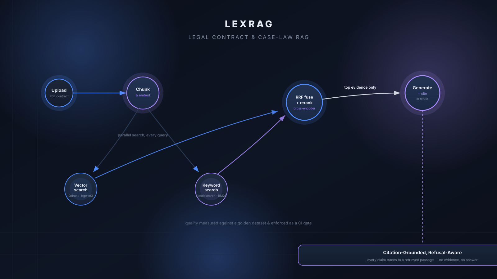

LexRAG
Legal contract & case-law RAG platform
Ingests PDF contracts and case-law documents and answers questions with traceable citations, refusing to answer when the evidence isn't there. Hybrid retrieval (Qdrant dense vectors + Elasticsearch BM25, merged via Reciprocal Rank Fusion) refined by a cross-encoder reranker, with a RAGAS-based evaluation harness enforced as a CI quality gate — 100% recall@10, 88% precision@5 on the golden evaluation set.
PythonFastAPIMongoDBQdrant
ElasticsearchRAGASDocker ComposeGitHub Actions